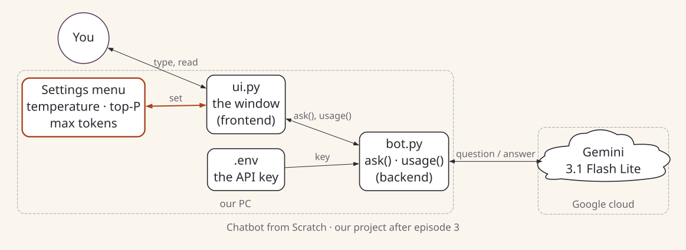
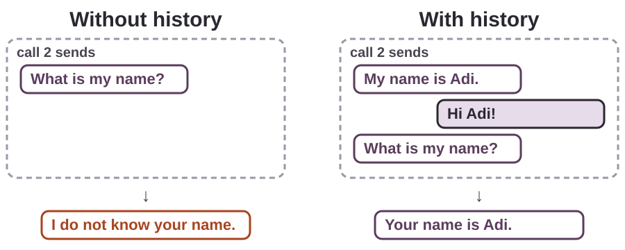
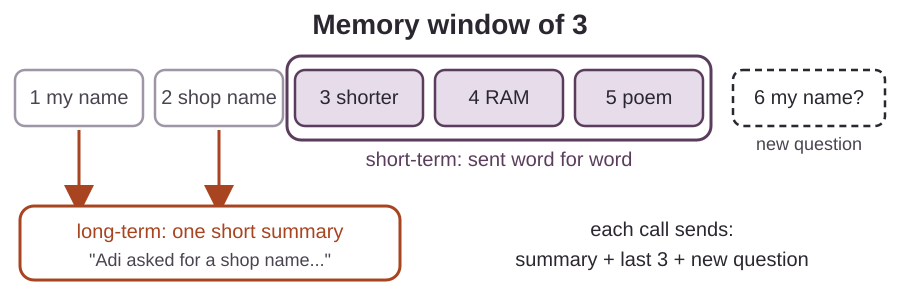
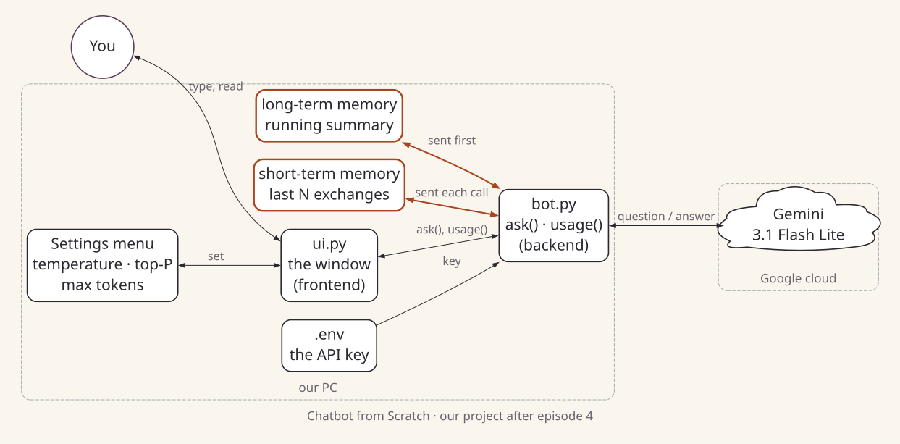

Prefer to watch? This chapter goes with Episode 4 (6:23). Open it on YouTube.
.venv. Antigravity, signed in: install Antigravity on Windows. And your own Gemini key in .env..env with GEMINI_API_KEY; the README shows the setup.It forgets your name
Chapter 3 gave our window a Settings menu. It ended on a puzzle.

Run python ui.py and type My name is Adi. It answers "Hi Adi!". Then ask What is my name? It does not know. The grey line under each reply says why: 6 in both times. Only your latest question went to Gemini.
Why does my chatbot forget what I just told it?
AI Studio remembers
Send the same two messages in Google AI Studio, on the same model, Gemini 3.1 Flash Lite. It answers "Your name is Adi." And the counter at the top shows 31 tokens, more than our two small questions.
A model has no memory
Same model, two answers. The difference is not the model: every call is read on its own. AI Studio is a full chat app, and it sends the earlier messages again with every new question. Our window sends only the latest one.

| Google AI Studio | Our window (Chapter 3) | |
|---|---|---|
| Sends with each question | The whole conversation so far | Only your latest question |
| Knows your name a message later | Yes | No |
| Tokens in for "What is my name?" | More: the history goes along | 6 |
The short-term prompt
So we give our bot a short-term memory: the last few exchanges, sent with every question. One exchange is one question and its answer. Make a new file, prompts/04-memory.txt.
Task : Give the bot a short-term memory: the last few exchanges of this chat, sent with every new question Context : - Use the virtual environment .venv in this folder. Don't create a new one. - Today ask() sends only my latest question to Gemini, so the bot forgets everything I said before. - In bot.py, keep the history in our own list: every question I ask and every reply the bot gives. Don't use the SDK's chats API. - One exchange is one question plus its reply. - With each new question, send the last N exchanges word for word, then the new question. Older exchanges are not sent. - N is the memory window. It starts at 6. - Keep ask() working as it does now for the terminal chat, with the same settings (temperature, top_p, max_output_tokens). - Add a function new_chat() that empties the history. - The memory lasts only while the program runs. Don't save it to a file. - In the window, add Settings > Short-term memory: a tick I can select or unselect. It starts selected. - When it is unselected, send only my latest question, as before. - Add Settings > Memory window... with a choice of 0, 3, 6, 9, 12 or 15 exchanges. - Add Settings > New chat: it calls new_chat() and clears the chat area. - The grey status line under the menu bar also shows the memory, for example: Short-term on, 6 exchanges, 4 in the window. - Keep everything else as it is: the grey line under each reply with its tokens in and out, the token counter, the settings, the error messages and the colours. - No summary of older exchanges yet, and no system prompt. Folder arch : - ui.py : the window (frontend) - bot.py : the chatbot (backend), now with the history - prompts/ : our prompts
The history lives in our own list, not the SDK's chat feature, so you can see that memory is text we send again. The window size and the tick are yours to play with.
Review and implement prompts/04-memory.txt
It works for a while. When it is done, 3 files changed: click Accept all.
Short-term memory, live
python ui.py
The grey line under the menu bar now shows the memory: Short-term on, 6 exchanges. Tell it your name, then ask it. "Your name is Adi." This time 27 tokens went in, not 6: the first exchange went along.
Now Settings › Memory window… and pick 3 exchanges instead of 6. Ask four more things: a name for an electronics shop, a shorter one, what RAM does, and a 2-line poem about rain. Now read the tokens in under each reply: 46, 54, then 44 as your name drops out, 69 for the poem, 77 for the last question. They no longer grow with the chat, because only 3 exchanges go along. Ask your name again: "I don't know your name." It fell out of the window.
Why a window
Sending everything works for a short chat. But each call carries the whole conversation again, so the tokens in, and what you pay, grow with every message. A window caps that cost; the price is that anything older is gone. Real chat apps fill the gap with a short summary of the older part, and that summary is our long-term memory.

The long-term prompt
A second file, prompts/04-summary.txt. Gemini itself writes the summary, at most 100 words, and keeps facts like your name. It is updated only when an exchange falls out of the window.
Task : Give the bot a long-term memory: one running summary of the exchanges that fall outside the memory window Context : - Use the virtual environment .venv in this folder. Don't create a new one. - Today, exchanges older than the memory window are simply not sent, so the bot forgets them. - When an exchange falls outside the window, ask Gemini to update one running summary with it: the old summary plus that exchange in, a new short summary out. - Keep the summary short, at most 100 words, and keep facts about me such as my name. - With each new question, send the summary first, then the last N exchanges word for word, then the new question. - The summary lasts only while the program runs. Don't save it to a file. - Add Settings > Long-term memory: a tick I can select or unselect. It starts selected. - When it is unselected, make no summary and send none, as before. - Settings > New chat also clears the summary. - Add Settings > Show memory summary: a small window that shows the current summary. - The grey status line also shows the long-term memory, for example: Short-term on, 3 exchanges, 3 in the window. Long-term on, 5 summarised. - Count the tokens of the summary updates in the token counter too. - Keep ask() working for the terminal chat, and keep everything else as it is. - No system prompt yet. Folder arch : - ui.py : the window (frontend) - bot.py : the chatbot (backend), with the history and the summary - prompts/ : our prompts
The summary calls are counted in the token counter too, so the cost you see is the real one.
Review and implement prompts/04-summary.txt
Again 3 files changed: click Accept all.
Long-term memory, live
Run python ui.py again. The Settings menu now has Long-term memory (ticked) and Show memory summary. Set the window to 3 again and have the same chat: your name, the shop name, a shorter one, RAM, the rain poem. The grey line says 2 summarised.
Ask your name. "Your name is Adi." Your name left the window, but it was kept in the summary. Settings › Show memory summary shows it:
New chat
Settings › New chat clears both memories: the grey line goes back to 0 summarised, and "What is my name?" gets "I don't know your name" again, with 6 tokens in. Both memories last only while the program runs; nothing is saved to a file.

Quick reference
Every command from this chapter. The prompts are above.
| Command or menu | What it does | Use it when |
|---|---|---|
Review and implement prompts/04-memory.txt | Adds short-term memory | After writing the first prompt |
Review and implement prompts/04-summary.txt | Adds long-term memory | After the second prompt |
python ui.py | Opens the window | To try each memory |
| Settings › Memory window… | 0, 3, 6, 9, 12 or 15 exchanges | To trade memory against tokens |
| Settings › New chat | Clears both memories | To start fresh |
The takeaway
- A model has no memory between calls. A chatbot remembers only what we send it again.
- Short-term memory sends the last few exchanges word for word; the window caps how many, and so the tokens.
- Long-term memory folds what falls out of the window into one short summary, sent first with every question.
Which memory remembers?
The goal: see each memory work, and fail, in your own window.
The steps: give both memory prompts to the agent on your machine. Set the memory window to 3, tell it your name, and chat for 4 turns. Then ask your name with long-term memory on, and then off.
Before you look: which one remembers?
One question for you: what should your own bot remember about you?
Next: a character
Ask our bot "Who are you?" and it has no answer of its own, only "a large language model, trained by Google". In Chapter 5 it gets a character: the assistant of our electronics shop.
References
Where each number on this page comes from. Everything was also checked in our own recording on 19 Nov 2026.
- Google · Text generation: multi-turn conversations Chat history is sent with each request; the model itself keeps no state. https://ai.google.dev/gemini-api/docs/text-generation
- Google · Google AI Studio The chat that remembers, and its token counter. https://aistudio.google.com
- Learn AI by Building · chatbot-from-scratch on GitHub This chapter's finished code and prompts. https://github.com/Aditya-402/chatbot-from-scratch
- My own recording · 19 Nov 2026, Windows 11 Every answer and token count on this page is from those takes, on Gemini 3.1 Flash Lite.
New chapters and episodes come out every week. Follow along on YouTube or the WhatsApp channel. Questions? Ask under the video on YouTube; I read every comment.